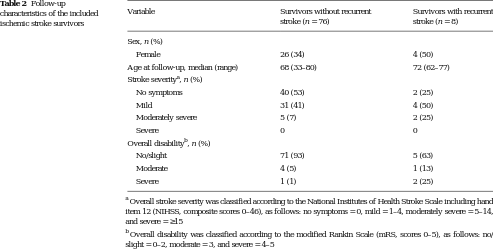

|

corpus-oa-validation/10.1007_s12975-017-0523-9/tables/table2/table.svg.png
|
| characteristics of the included ischemic stroke survivors |
Variable |
Survivors without recurrent stroke (n = 76) |
Survivors with recurrent stroke (n = 8) |
| Sex, n (%) |
|
|
| Female |
26 (34) |
4 (50) |
| Age at follow-up, median (range) |
68 (33–80) |
72 (62–77) |
| Stroke severity , n (%)^{a} |
|
|
| No symptoms |
40 (53) |
2 (25) |
| Mild |
31 (41) |
4 (50) |
| Moderately severe |
5 (7) |
2 (25) |
| Severe |
0 |
0 |
| Overall disability , n (%)^{b} |
|
|
| No/slight |
71 (93) |
5 (63) |
| Moderate |
4 (5) |
1 (13) |
| Severe |
1 (1) |
2 (25) |
corpus-oa-validation/10.1007_s12975-017-0523-9/tables/table2/table.svg.html
|

corpus-oa-validation/10.1007_s12975-017-0523-9/tables/table3/table.svg.png
|
| included ischemic stroke survivors with no or partial UEMI recovery versus those with |
Variable |
No or partial UEMI recovery (n = 10) |
Complete UEMI recovery (n = 31) |
p value |
| complete recovery |
Sex, n (%) |
|
|
|
|
Female |
5 (50) |
10 (32) |
ns^{a} |
|
Age at stroke onset, median (range) |
65 (36–74) |
64 (28–75) |
ns^{b} |
|
NIHSS at baseline, median (range) |
7 (2–18) |
3 (1–8) |
<0.001^{b} |
|
NIHSS arm/hand at baseline, median (range) |
2 (1–6) |
1 (1–3) |
0.004^{b} |
|
Lesion volume in mL, median (range) |
26.5 (0.4–155.3) |
1.0 (0.1–23.3) |
0.003^{b} |
|
Lesion location, n (%) |
|
|
|
|
Cortical only |
0 |
3 (11) |
ns^{a} |
|
Subcortical only |
3 (30) |
16 (57) |
ns^{a} |
|
Corticosubcortical |
7 (70) |
7 (25) |
0.02^{a} |
|
Motor cortex involvement, n (%) |
7 (70) |
8 (29) |
0.03^{a} |
|
Corticospinal tract involvement, n (%) |
8 (80) |
18 (64) |
ns^{a} |
corpus-oa-validation/10.1007_s12975-017-0523-9/tables/table3/table.svg.html
|

corpus-oa-validation/10.1007_s12975-017-0523-9/tables/table1/table.svg.png
|
| baseline characteristics for included ischemic stroke patients |
Variable |
Survivors (n = 84) |
Deceased before _{a} follow-up (n = 11) |
| Sex, n (%) |
|
|
| Female |
30 (36) |
3 (27) |
| Age at stroke onset, median (range) |
64 (28–75) |
67 (60–71) |
| Acute recanalization treatment , n (%)^{b} |
13 (15) |
1 (9) |
| NIHSS on days 2–4 after stroke onset, median (range) |
3 (1–18) |
3 (1–7) |
| UEMI on days 2–4 after stroke onset, n (%) |
44 (52) |
5 (46) |
corpus-oa-validation/10.1007_s12975-017-0523-9/tables/table1/table.svg.html
|